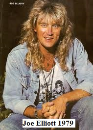
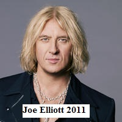
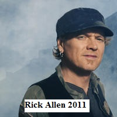
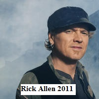
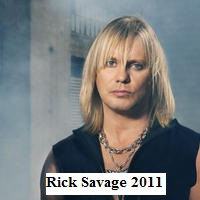
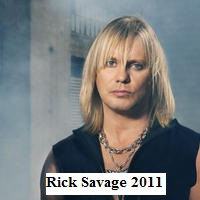
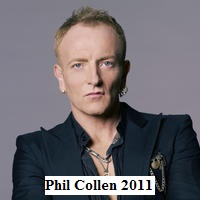
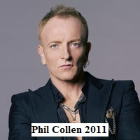
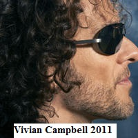
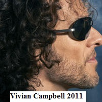

Def Leppard are made up of 5 members. There has been other members but the band has had the same line up since 1992. After the death on the band member Steve Clark in 1991.
 
Joe Elliott born 1 August 1959. He is the lead singer of the band and has been from the beginning. He also plays the rhythm guitar. Elliott is also a song writer who can play many other instruments guitar, piano, electric keyboard and the drums. Joe Elliott is one of two of the members of Def Leppard who have been on every album released by the band.
Joe met Pete Willis after missing his bus to school one day, where he then was introduced to another band member Rick Allen, where he was invited to audition for the band as their guitarist. Where the other members agreed that his talents were for the front man of the band, so they had a lead singer. He is currently a host on a radio station on Saturday nights.
To find out more on Joe Elliott click here or head to there official fan page click here
The song playing now Joe wrote for fun until their producer, Mutt Lange suggested they added it to the Hysteria album. It's called Pour Some Sugar On Me.
 

Rick Allen born 1st November 1963. When Rick was 14, his mother was the one who replied to an add in the paper for a drummer of a band. Rick was 15 years of age when he joined Def Leppard. He was famous for being able to play the drums one hand due to a car accident in 1984 where he lost an arm. Joe Elliott said that he is a better drummer since he lost his arm. After his accident, he would use semi electric drums but in 1986 he was using electronic drum kits. He will still use acoustic drums when recording if he is able. Rick Allen and his wife are co-founders of a charity to educate and help people who are in crisis. Raven Drum Foundation is the name of the foundation. Rick also started a company promoting StikRick which is a stick figure drawing of him. He sells t-shirts and other clothing with the logo of him and a slogan "Life is great!! Be a Rock-Star!!.... Which he created to fund the foundation that he created to help the veterans. Rick Allen has a name that his fans call him - "Thunder God"
To find out more on Rick Allen click here or head to their official fan page click here
 

Rick Savage was born 12th of February 1960. Rick was also known by his nickname "Sav" as there were 2 Ricks in the band. Rick Savage was a pretty good footballer and he played with the team Sheffield United for 2 years even though he actually barracked for there rival. He gave up football to play with Def Leppard.Sav plays bass guitar in the band. He was one of the original band members for Def Leppard. Ricks older brother was the one who taught him to play the guitar but he can also play the keyboard , double bass and he sings also. Sav is also a songwriter.
To find out more about Rick Savage(Sav) click here or head to their official fan page click here
 

Phil Collen was born 8th December 1957. Phil took over Pete Willis spot in the band when he was fired, Phil was asked to audition for Def Leppard by recording their song Photograph where he blow the band away by getting it right first time. He fitted in the right in with the rest of the band but became great friends with band member Steve Clark. He shared the co lead guitarist spot with Steve Clark, and Phil was also one of the background singers of the band. There friendship lead them to the trademark dual guitar sound of Def Leppard. They also became known as the "Terror Twins" for their playing. Steve Clark died suddenly in 1992 which left him wanting to leave the band because it was to hard to make the sounds of the "Terror Twins" alone. Vivian Campbell joined the band and took away the extra work load from Phil where he could begin to enjoy the music again. Phil Collen is know for the Def Leppard band member who wears on top on stage.
To find out more about Phil Collen click here or head to their official fan page click here
 

Vivian Campbell was born 25th August 1962. He joined Def Leppard in 1992 after the death of Steve Clark. Vivian has been in and out of bands since the age of 15 where he joined his first band Sweet Savage. Other band names he has been involved in are Whitesnake, Dio and he in 2011 he got to join or play with one of his favourite bands Thin Lizzy. A member of Def Leppard said that Vivian was able to pick up and play the way Steve Clark did which was good for the band and the loss of him was easier to handle. Campbell has in the past released solo music but still is involved in the band.
To find out more about Vivian Campbell click here or head to their official fan page click here
Steve Clark was part of the band from 1977 until he suddenly died in 1991. to learn more about Steve click here